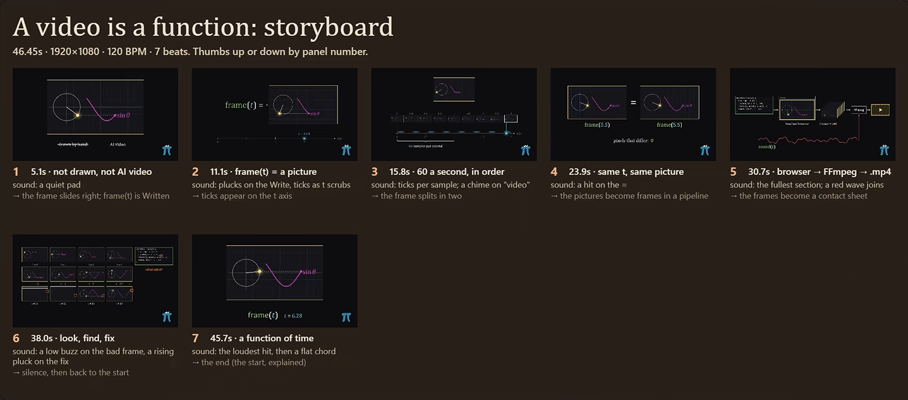

01
C
Context7
upstash/context7
★ 63.1k
Pulls current, version-specific library docs into Claude Code, so it stops guessing at APIs that changed.

Replaces
Pasting docs pages into the chat by hand
Use it for
Any library that shipped a breaking change this year
{{BRAND}}
Oct 2026
02 / 09